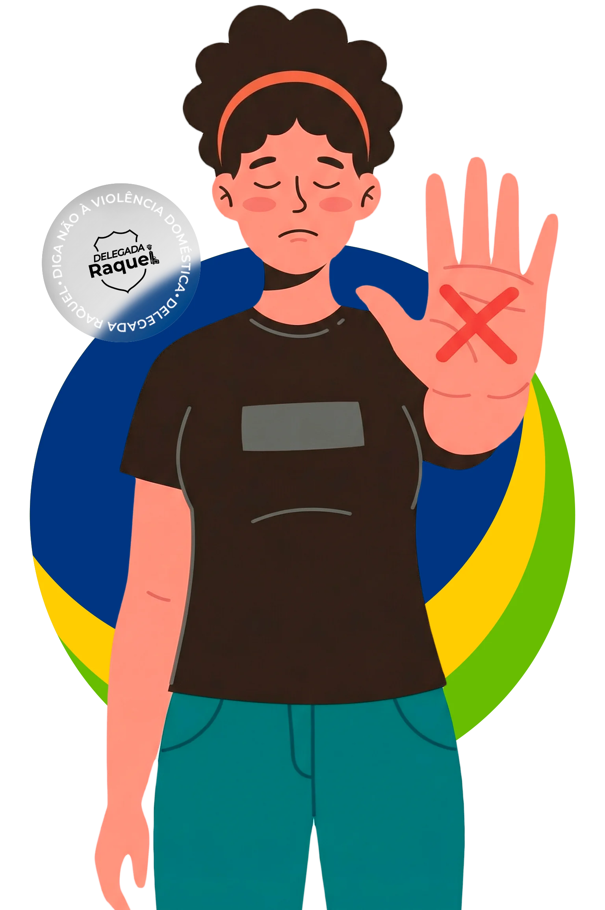

Entre na comunidade oficial para receber orientação, conteúdos de proteção e acesso à cartilha digital.
Uma trajetória construída na segurança pública, no Direito e na defesa das mulheres.
Raquel Kobashi Gallinati Lombardi é Delegada de Polícia do Estado de São Paulo, mestre em Filosofia e especialista em Ciências Penais, Processo Penal e Direito de Polícia Judiciária.
Sua atuação une experiência nas delegacias, liderança institucional e produção jurídica voltada à proteção da mulher e ao fortalecimento da segurança pública.
Uma base técnica construída entre o Direito, a Filosofia, o Processo Penal e a atividade policial.
Graduação pela Universidade Mackenzie.
Mestrado pela Pontifícia Universidade Católica de São Paulo.
Pós-graduação pela Universidade Anhanguera - Uniderp.
Pós-graduação pela Academia Nacional de Polícia da Polícia Federal.
Pós-graduação pela Escola Paulista da Magistratura.
Da atuação em delegacias à liderança institucional, a trajetória de Raquel reúne campo, gestão, representação e defesa da Polícia Civil.
Foi a primeira mulher a presidir o Sindpesp, abrindo espaço em uma posição estratégica de representação da carreira.
Construiu experiência em unidades do Decap, incluindo Ponte Rasa, Lajeado, Vila Clementino, Vila Maria e Jaçanã.
Marcou sua atuação pela defesa de melhores condições de trabalho, remuneração e estrutura para a Polícia Civil.
Exerceu a Secretaria de Segurança Pública de Santos, tornando-se a primeira mulher a ocupar o cargo.
Compôs a diretoria da Associação dos Delegados de Polícia do Brasil e atua como diretora jurídica da Adepam.
Raquel também participa da construção técnica do debate público, com obras jurídicas sobre Polícia Judiciária, Direito Policial, Lei Maria da Penha e proteção da mulher vítima de violência.
Comentários artigo por artigo e estudos doutrinários sobre instrumentos legais de proteção às mulheres.
Combate à violência contra a mulher, medidas protetivas e estudos doutrinários sobre a legislação.
Direito Policial e temas atuais da atuação policial no Brasil e no mundo.
Leituras complementares de Direito Penal e interpretação constitucional sob a ótica das mulheres.
Estudos sobre processo penal, garantias legais e atuação técnica na proteção da vítima.
Obras sobre políticas públicas e inovações legislativas para proteção da mulher.
Clique nos tópicos abaixo para entender seus direitos.
Não acredite na fase da "Lua de Mel". O ciclo sempre volta pior.
Você tem direito a proteção imediata. O juiz pode ordenar em até 48h:

A informação chega primeiro para quem está perto. Junte-se à minha comunidade exclusiva no WhatsApp.
Grupo fechado e seguro (sem spam).
Saber quem chamar pode salvar uma vida. Não se cale.
Polícia Militar. Acione em flagrante, agressão ocorrendo agora ou risco de morte.
Ligar 190Apoio e Orientação. Informações sobre leis, direitos e rede de atendimento 24h.
Ligar 180Anônimo. Para entregar informações que ajudem na investigação sem se expor.
Ligar 181Site seguro e informativo.